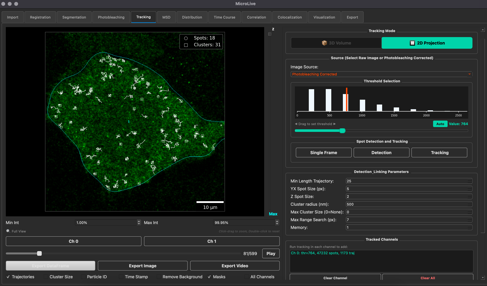

Single-molecule
gene expression
How is translation regulated in living cells? I study molecular dynamics through live-cell imaging and quantitative analysis of individual RNA and protein signals.
Translation dynamicsComputational biology & biophysics
Connecting single molecules to predictive biology.
I combine single-molecule imaging, stochastic models, and open-source software to understand how cells regulate gene expression.
Research Associate
Biochemistry & Molecular Genetics
University of Colorado Anschutz Medical Campus

01 / Research
My work connects experimental observations with computational models: extracting reliable measurements, testing biological mechanisms, and designing more informative experiments.
How is translation regulated in living cells? I study molecular dynamics through live-cell imaging and quantitative analysis of individual RNA and protein signals.
Translation dynamicsWhat can a measurement tell us about a mechanism? I use stochastic models, simulation, and inference to connect gene expression dynamics with testable predictions.
Computational frameworkHow can complex data become useful biological measurements? I build open-source workflows for microscopy analysis, molecular tracking, and computational experimentation.
Research software02 / Scholarship
8 selected works
Selected work, listed by year. Preprints are identified separately; author names follow the original publications.
03 / Open science
Reusable tools that connect imaging, simulation, and biological interpretation. Source code and practical examples are openly available.
Featured research software
A toolkit for quantifying live-cell single-molecule microscopy. An integrated graphical interface brings together cell segmentation, particle tracking, spot quantification, and analysis of translation dynamics.
Published in Bioinformatics Advances, 2026
Automated cell segmentation, spot detection, and transcript quantification in fluorescence in situ hybridization images.
Simulated single-molecule gene expression experiments for testing analysis pipelines and exploring experimental designs.
Workflows for somatic variant detection, digital PCR primer design, and simulation of rare mutation detection in circulating tumor DNA.
A Python terminal game inspired by the 1977 Wow! signal, combining science fiction, radio astronomy, and AI-driven dialogue.
Explore the project Watch trailer04 / Teaching & mentorship
I am committed to making computational biology accessible to students from diverse backgrounds through hands-on learning and inclusive mentorship.
My background spans Mexico, Germany, and the United States, shaping how I approach interdisciplinary research and education.
Co-founder & lead organizer
The Undergraduate Quantitative Biology Summer School (2020–2024) introduced students to computational modeling, microscopy analysis, and stochastic gene expression through practical Python-based learning. Recorded tutorials and learning materials remain available.
05 / Background
I am a computational biologist and Research Associate in the Department of Biochemistry and Molecular Genetics at the University of Colorado Anschutz Medical Campus. My background in biomedical engineering and physics informs my work across molecular imaging, mathematical modeling, and scientific software.
I am interested in academic opportunities that bring together research in gene expression, the development of quantitative methods, and the training of the next generation of scientists.
Google Scholar GitHub06 / CV & contact
For academic opportunities, research collaborations, or speaking invitations, please connect with me on LinkedIn.
My curriculum vitae is available on request.
Connect on LinkedIn{kind=link}